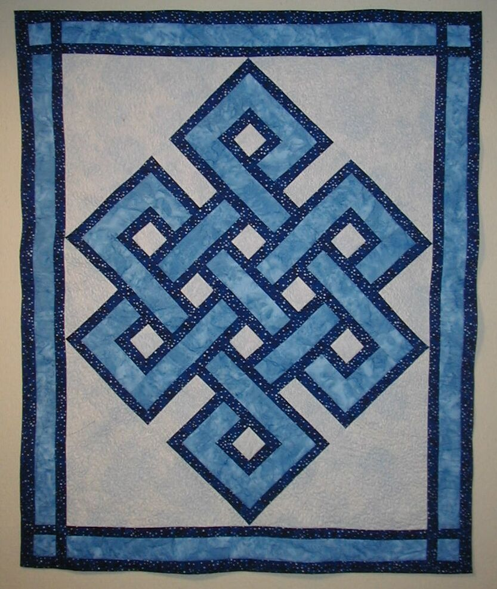

|
Rocks 'n Rags The Artist's Way |
 |
Trained as a teacher and a biologist.
I worked as a teacher, biologist and real estate agent.
I have for many years worked with fabric, wool and cotton yarns, creating clothing, wall coverings, table coverings and afghans.
Quilting provides an unique outlet for combining both my creative and my mathematical side.
I have sketched in pastels and made many clay pots.
|
... my cat is a great helper... |
About three years ago, I started working with fabric, quilting in a variety of styles.
I have created many baby quilts, wraps, wall hangings and a bedspread.
Some are hand made, some are machine quilted.